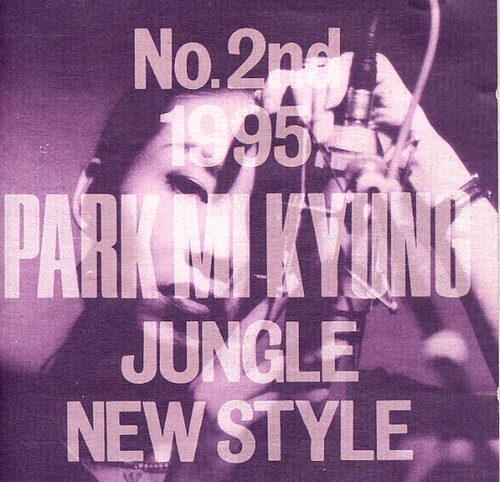
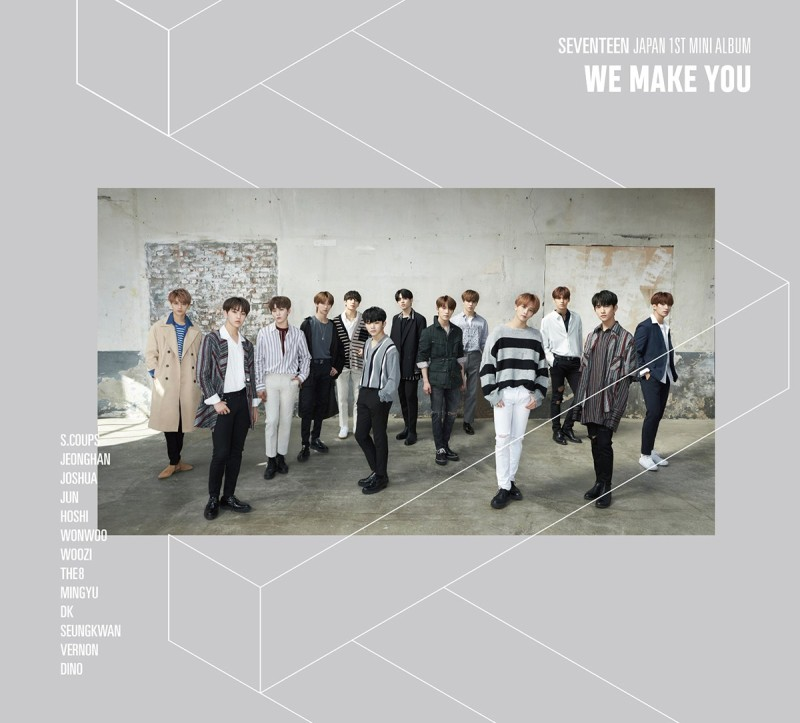
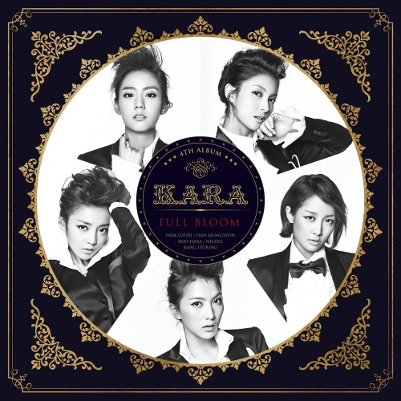
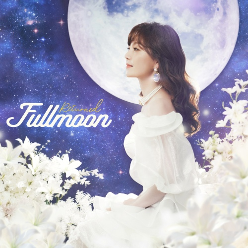
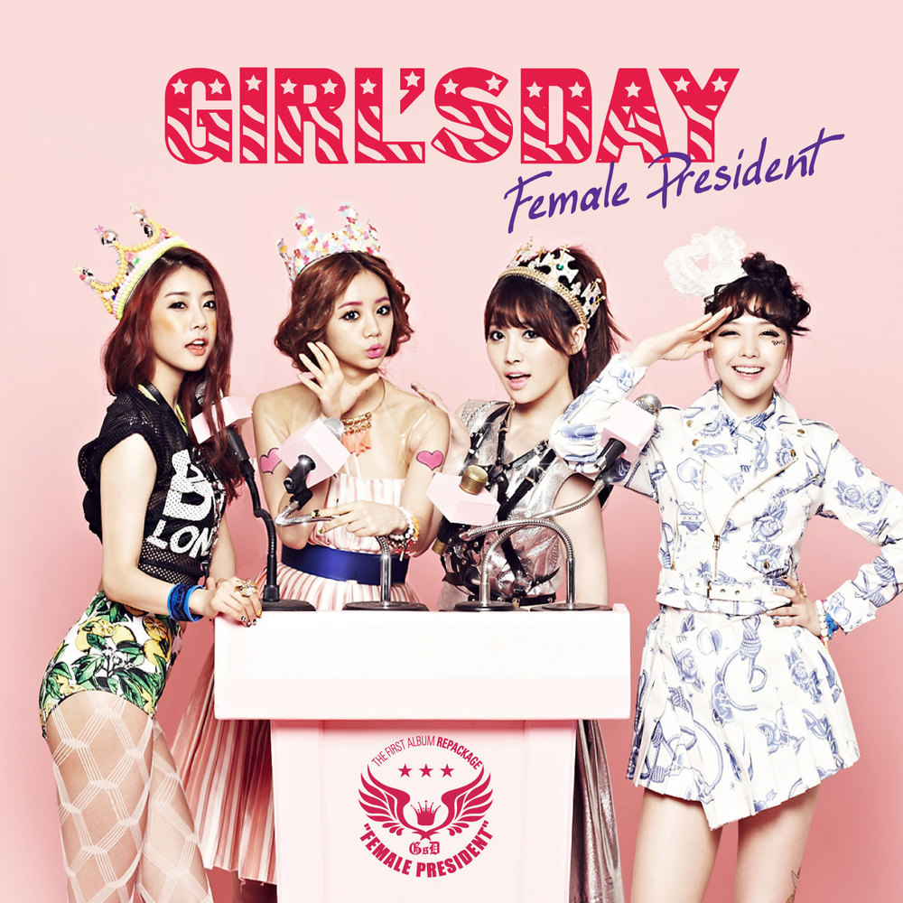
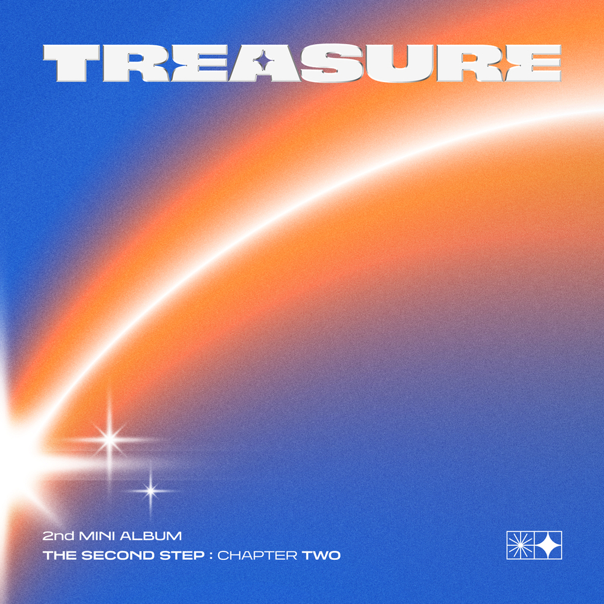

나는 코인 노래방에 자주 간다.
아래에서는 내 애창곡의 가사와 노래의 포인트를 소개 하려고 한다.
셀 수도 없이 드나들었던 노래방.
나의 한풀이.. 나의 가장 작은 무대..
쇼는 계속된다! SHOW MUST GO ON~~!!
이브의 경고

가수 박미경
작곡 천성일
작사 김창환
태진 2699
금영 3954
♪
너에게만 있는 능력처럼
그렇게 날 속이려고 하면
나에게는 더 이상 순애보는 없어 난 널
그냥 떠나버릴거야
고음 후에 이어지는 뜬금없이 이어지는 랩이 매력적이다. 내가 낼 수 있는 최저음과 최고음이 들어가 있는 곡이라 ‘오늘 목 상태 좋은데?ㅋ’ 하면 부르는 곡. 쉬는 구간이 없기 때문에 혼자 부르면 몹시 힘들다. 노래의 2/3 지점에서 숨이 멎을 수 있기 때문에 꼭 랩을 불러줄 듀엣 파트너를 구할 것. 생소하지만 일단 부르면 모두가 아는 곡이다.
CALL CALL CALL!

가수 SEVENTEEN
작곡 WOOZI,BUM..
작사 WOOZI,BUM..
태진 68107
금영 24444
♪
もし セカセカセカセカセカセカセカセカ
(모시 세카세카세카세카세카세카세카세카)
(만약 세상세상세상세상세상세상세상세상)
世界を敵にしたって
(세카이오 테키니 시탓떼)
(세상이 적이 된다고 해도)
マジ ギリギリギリギリギリギリギリまで
(마지 기리기리기리기리기리기리기리마데)
(정말 아슬아슬아슬아슬아슬아슬아슬할 때까지)
僕らはずっと一緒
(보쿠라와 즛또 잇쇼)
(우리는 계속 함께야)
아주 빠른 랩으로 시작하는 첫 소절로 같이 노래방 간 상대에게 당혹스러움을 주고 싶을 때 사용하는 곡.
적당한 고음과, 쉬운 일본어, 신나는 리듬으로 늘 나에게 즐거움을 주는 곡이다. 세븐틴 노래 중 가장 노래방에서 부르기 좋은 곡이라 생각한다. (공동 2위는 '아낀다', '거침없이', 절대 부르면 안 되는 곡은 '아주 nice')
숙녀가못돼(Damaged Lady)

가수 카라
작곡 이주한,한재호,김..
작사 송수윤,한재호,김..
태진 37360
금영 77739
♪
비나 확 쏟아져라 now
가다 확 넘어져라 넌
담에 겪어 봐라 다 uh (yeah, yeah-yeah, hoo!)
그래 나 못 돼, 숙녀가 못 돼
카라의 노래 중에서는 고음이 많이 없는 편이다. 이 노래의 포인트는 1. 갑자기 첫 소절부터 10초간 고음 발사. 2. 노래 후반부 독백.(지금 어디야...? 집에 다 왔니...? 생각해 볼수록 화가 너무 치밀어...) 노래방에서 부르기 좋은 적당한 뽕짝 리듬에다가 고음 발사, 랩, 독백까지 추가된, 아주 알차게 즐길 수 있는 곡.
new future(달빛천사 ED)

가수 이용신
작곡 이창희
작사 신동식
태진 17708
금영 81642
♪
저 하늘을 봐 서로 멀리 있어도 함께할 수 있어
나 너에게 언제나 빛나는 둥근 달처럼
너를 기다리고 있을게
너무 늦지 않게 내게 와줘
Let’s sing a song
가끔 꿈과 희망을 되찾고 싶을 때, 동요를 부르는 마음가짐으로 부르는 곡. 가사가 감동적이다. 후반부에 말도 안 되는 애드리브만 빼면 누구나 부를 수 있는 훌륭한 곡이다.
여자 대통령

가수 이용신
작곡 최도관, 남기상,..
작사 남기상, 강전명,..
태진 37019
금영 48149
♪
우리나라 대통령도 이제 여자분이신데
뭐가 그렇게 심각해 왜 안돼 여자가
먼저 키스하면 잡혀가는 건가?
그 애에게 다가가 니가 먼저 키스해
이제 그래도 돼 니가 먼저 시작해
따라따라 따따라따라
모두가 기억하는 간주. 초등학생 때의 기억이 난다. 언제나 큰 웃음을 주는 곡. 웃느라 한번도 똑바로 부른 적은 없다.
HELLO

가수 TREASURE
작곡 CHOICE 37,..
작사 CHOICE 37,..
태진 82414
금영 82897
♪
흐지부지 구렁텅이
삶의 무지개를 피고
비가 떠난 어둠이 지나 너란
아침의 품으로
매 순간 감정의 파도를 외롭게 탔었던
그런 나란 놈을 보내고 말해 안녕 또 안녕
내 눈물아 안녕
쓸쓸함도 안녕
자 이제 뛰기 시작해 심장 소리는 Pump pump
최근에 자주 부른 곡. YG 노래는 노래방에서 틀면 더 좋다는 나의 가설에 확신을 주었다. 빠른 비트와 느린 가사, 재미있는 랩으로 묘하게 계속 다시 찾게 되는 곡이다. 부르기 무척 쉽다!
셀 수도 없이 드나들었던 노래방.
나의 한풀이.. 나의 가장 작은 무대..
쇼는 계속된다! SHOW MUST GO ON~~!!